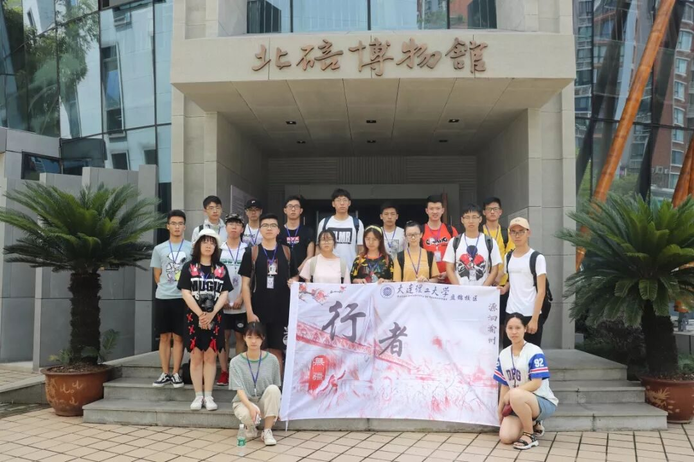
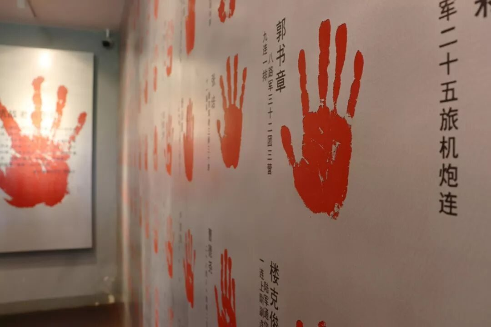

【行者无疆 源洄渝州】厚植于史 情动于天
仰观缙岭霞，上带赤云影。
何时脱尘缘，静入烟霞境。


01
北碚历史文化陈列馆
--还原乡建记忆，讲述北碚往事
“有巨石伸入嘉陵江中曰碚，又因在渝州之北故名北碚”，进入北碚历史文化陈列馆，北碚之名由来的刻字首先映入眼帘，随之而来的，是北碚厚重的历史文化底蕴。
北碚因山水而兴，因田园而名，因文化而灵。东望群山，远山如黛，近山似墨，层峦叠嶂；西顾城中，楼盘点点，鳞次栉比，尽伏眼底。缙云山茂林修竹孕育缤纷四季，北温泉水暖生烟云蒸霞蔚，巴山夜雨亦诗亦画涤荡心扉。
一口古钟，是“南朝四百八十寺”盛景的缩影；残垣断壁，是对沉痛历史的纪念；地下沙盘，是对城乡未来的美好期许。栩栩如生的蜡像，向我们再现了玉大茶庄内的文化沙龙；读“三千名流”汇聚北碚的故事，你会发现，这里蕴藏着城市的根脉和灵魂。
02
建川博物馆
--铭记教训，居安思危
为了和平，收藏战争。
为了未来，收藏教训。
为了安宁，收藏灾难。
为了传承，收藏民俗。
建川博物馆内空间序列曲折，基调压抑沉重：不做修饰的墙面、踩在铁板上的吱呀声，以及昏暗色调的环境，让人身临其境，悲怆沉重，动人心魄。在坚固的防空洞里，阴冷潮湿，一杆杆冰冷无情的枪支，一张张惨不忍睹的照片，一幅幅染满鲜血的抗日标语，以及那一双双绝望无助的双眼，都在诉说着历史的残酷。
远离了金戈铁马的战场，黯淡了刀光剑影的锋芒，远逝了马嘶鼓鸣的砍杀，吹散了狼烟滚滚的尘埃。那曾经惊天动地的抗争，已化为无声的图像，化为冰冷的文字，融化于残剑折戟中，定格于展览窗口中。
“老兵老矣，但他们的手依然坚硬。”
“我不愿你在我近前尽孝，只愿你在民族分上尽忠。”
“不有行者，无以图将来。”

远离了金戈铁马的战场，贴近了粗茶淡饭的生活。吃穿住行的票据定格于展览窗口，静静呈现在我们眼前，勾勒出百姓的日常情态；囍文化博物馆围绕婚俗礼仪、结婚证照、婚嫁用品等 “囍”文化，从民俗角度展示中国婚俗礼仪的变化，传达喜气，带出“愿天下有情人终成眷属，白头到老”的正能量……
文物默默沉淀，硝烟渐渐消散。幸有这些文物，端陈于建川博物馆，它们穿越乱世留存至今，即便寥若星辰，也将载入史册。一些人，呼啸而去；一些事，迎面而来；一盏灯，忽明忽暗；一种魂，历久弥新。无畏严寒，无惧酷暑，无论大雨倾盆抑或烈日当头，行者们探寻文化的脚步从未停歇。

来源丨行者无疆实践团
文字丨黄玲
排版丨邓子孚
审核丨邓子孚 段智然
行者无疆实践团
QQ：2758025831

随行者一起认识世界
长按二维码关注